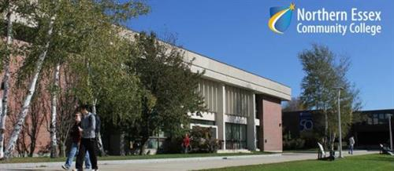

Hi! My name is Ronney Sanchez and I am a Computer Science major. I am glad to be in this course because I love making GUIs online and making my web page visible. This is my first time making a web page online. This is my second semester at UMass Lowell and I am becoming more advanced with these programs. I have experience with other programs as well such as C, C++, JAVA, and assembly. I spent plenty of time working with these languages. I am ready to do some HTML, CSS, Javascript, and JQuery because I love fancy web designs. I come from Lawrence, MA where I was born and raised. I attended Lawrence Family Development Charter School in middle school and Lawrence High School for high school.
About My Previous School
I used to go to Northern Essex Community College. I was studying the same major "Computer Science" and got an associates degree in the field. Luckily I was able to transfer to this school to go for a bachelors for another 2 years. Time went very fast for me throughout these college years.
I took the following classes at Northern Essex Community College:
- Data Management
- Information Security
- English Composition 1
- English Composition 2
- College Reading
- Intro to Operating System
- Calculus 1
- Calculus 2
- Computer Science 1
- Computer Science 2
- C Programming
- Fund Digital Logic
- Digital Design Lab
- Computer Networks 1
- C++ Programming Language
- Interpersonal Communications
- Microcomputers
- Intro Psycology
- Intro Biology 1
- Intro Biology 2
- Ethics
- US History 1
- Intro Philosophy
- Dev Psychology 1